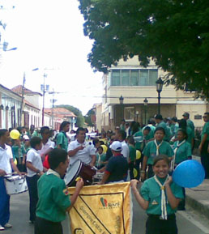

Todas
las Unidades, Manada, Tropa y Clan desfilaran y realizarán una
concentración en un lugar de alta flujo de personas para exponer
cantos, gritos, símbolos scouts, etc. y llamar la atención sobre el
movimiento juvenil que somos.
Esta actividad es la de cierre de la Semana Scout, por lo que debe
realizarse con gran entusiasmo y publicidad.
Fecha y Hora: 11 de mayo a las 9:00 am
Lugar de partida: Por confirmar
Lugar de llegada: Por confirmar
Nota:
Los jóvenes deben llevar gorra para protegerse del Sol, agua para
hidratrse y un almuerzo ligero.